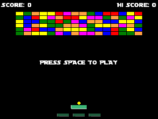

If all has gone well, you should now be playing a your own, complete, version of BreakThrough!

Now what? Well, you have a firm base on which to build so why not take some time to try things out based on what you've learned so far? Here are some suggestions for you:
- Add more sounds - We should have a sound for when the ball leaves the room and also for when the player gets a powerup, so why not add them?
- Add more powerups - Adding more powerups should be fairly easy now. Add a new image to the powerup sprite, add the frame number into the choose on Create, and then edit the switch in the collision event to do something. Maybe have one to make the bat smaller? Or try making one which has the ball pass through and destroy bricks rather than bounce off them?
- Add a background - The game is played over a simple black background, by why not add your own colourful one? You'll need a 640x480 sized sprite and then set it in the Room Editor to the Background layer.
- Make proper levels - At the moment the game is played on a single level that regenerates, but why not try making custom levels? You'll need to make more rooms, add the instances to them, and then in the controller object set it to go to another room instead restarting the current one when no bricks are left.
Those are just a few things that you can do with a base like this, but there is so much more! You could try adding a title screen and menu, or making a pause mechanism, or even adding persistent leaderboards and achievements... The list could go on and on, but the important thing is that you learn how to make games using GameMaker Studio 2 and, above all else, you have fun doing it!